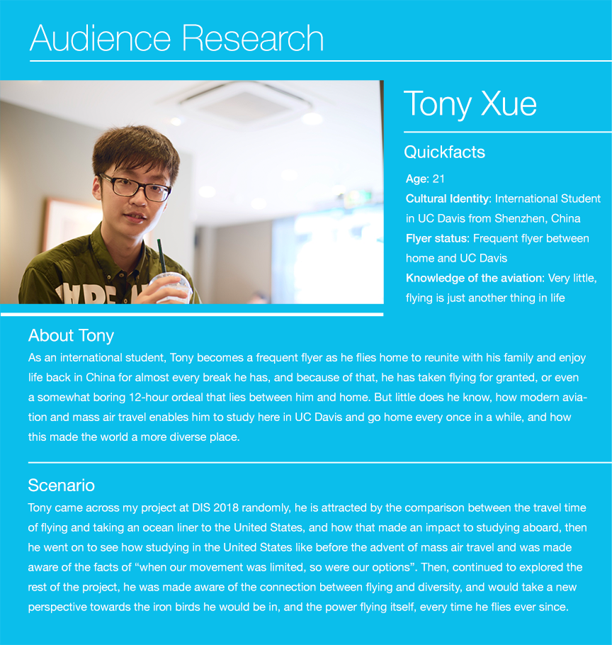

Audience Research

Tony Xue
Quick Facts
Age: 22
Cultural Identity: International Student in UC Davis from Shenzhen, China
Flyer status: Frequent flyer between home and UC Davis
Knowledge of the aviation: Very little, flying is just another thing in life
About Tony
As an international student, Tony becomes a frequent flyer as he flies home to reunite with his family and enjoy life back in China for almost every break he has, and because of that, he has taken flying for granted, or even a somewhat boring 12-hour ordeal that lies between him and home. But little does he know, how modern aviation and mass air travel enables him to study here in UC Davis and go home every once in a while, and how this made the world a more diverse place.
Scenario
Tony came across my project at DIS 2018 randomly, he is attracted by the comparison between the travel time of flying and taking an ocean liner to the United States, and how that made an impact to studying aboard, then he went on to see how studying in the United States like before the advent of mass air travel and was made aware of the facts of “when our movement was limited, so were our options”. Then, continued to explored the rest of the project, he was made aware of the connection between flying and diversity, and would take a new perspective towards the iron birds he would be in, and the power flying itself, every time he flies ever since.